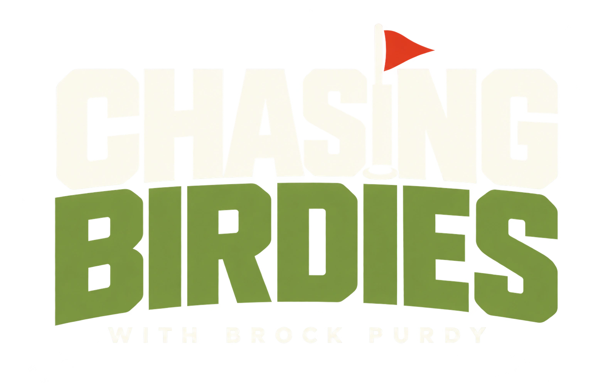

Chasing Birdies
Same legends. A different kind of drive.
Take the Niners from the gridiron to the green.
THE GOLD RUSH CLUB3 holes · California coast · Arcade golf
Select players
Choose your club. Aim. Pull back and let it fly.

THE FAITHFUL ON THE FAIRWAYSame legends. A different kind of drive.
Take the Niners from the gridiron to the green.
Choose your club. Aim. Pull back and let it fly.